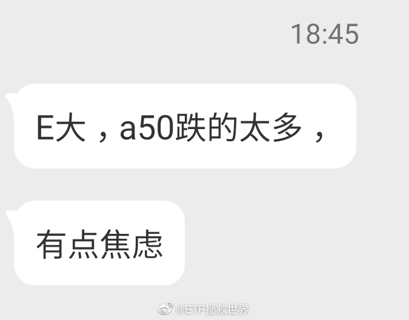

是这样的 评论配图 //@ETF拯救世界:回复@ETF拯救世界:又买回来。 评论配图 //@ETF拯救世界:一个半月，又出一格。@ETF拯救世界:最近三个月白银网格是这样的情况（顺序从下往上）等于筹码没丢，吃了两轮利润
回复@tasterOJwangc:可能你没有太关注我。我自己有长线的计划，有波段的网格。好几个品种的网格之前上涨已经出干净了，微博都有同步。大跌正好接回来，能不舒服吗。今年大幅波动是去年底的判断，今年也建议大家可以做波段降成本增利润。踏踏实实的。@ETF拯救世界:你焦虑吗。一个月前就说了：今年大幅波动。不波动怎么赚钱… 